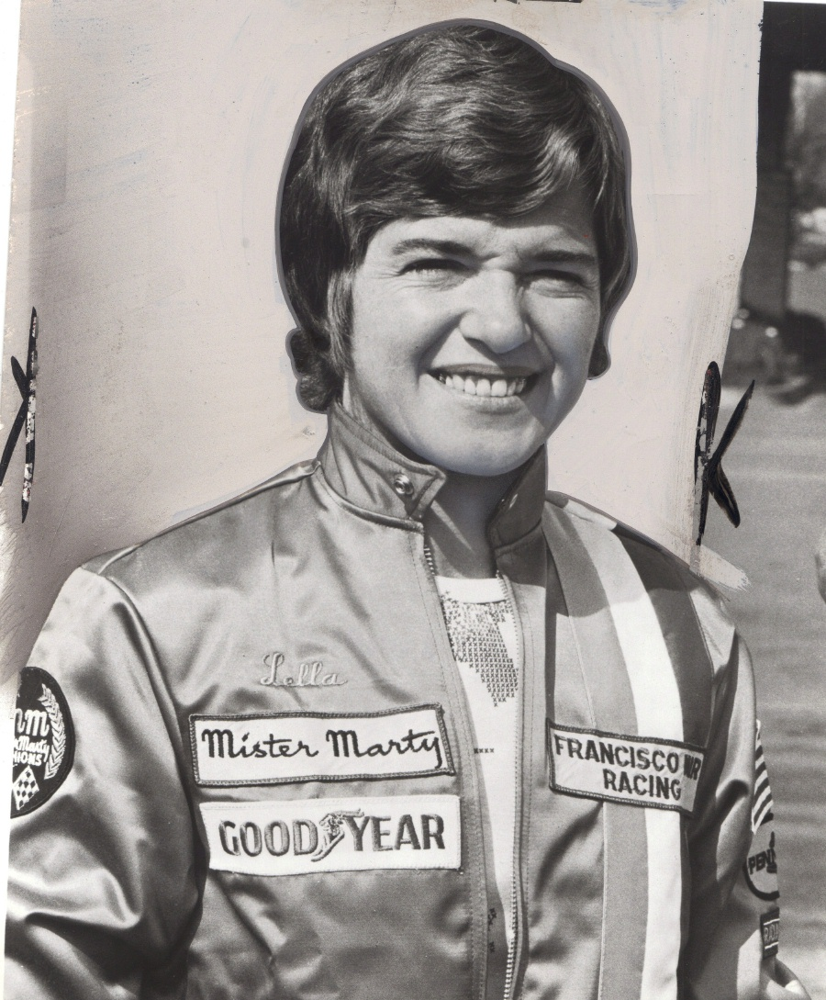
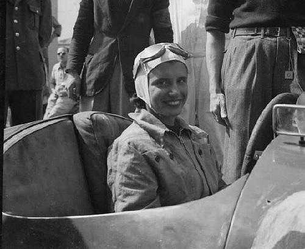
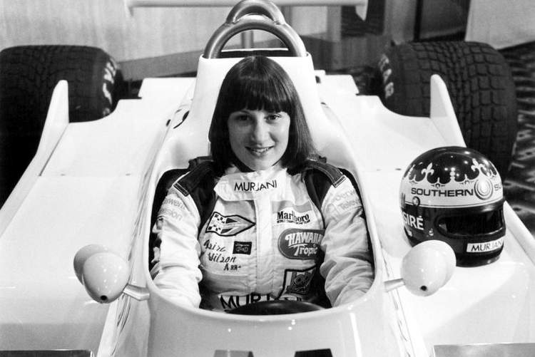
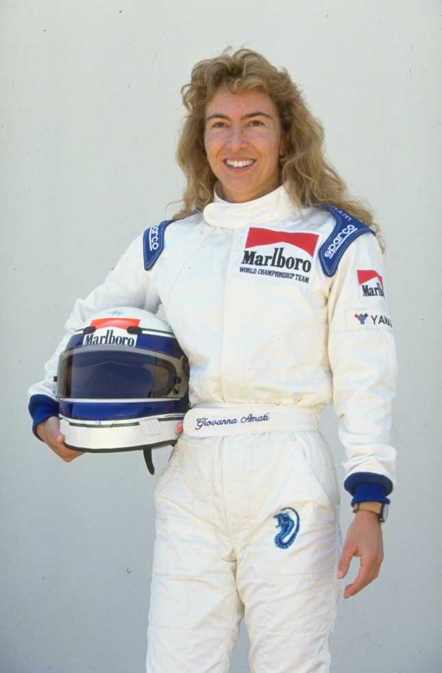

|
|
|
Kobiety w F1
Ta, która zdobyła pierwsze punkty
Lista kobiet, które startowały w wyścigach Formuły 1 od momentu powstania mistrzostw świata kierowców w 1950 roku.
Pięć kobiet zostało zgłoszonych do startu w wyścigach Formuły 1, jednak tylko dwóm udało się zakwalifikować i wystartować w wyścigu.
Kobietą, która startowała w największej ilości Grand Prix jest Lella Lombardi, która wystartowała w 12 wyścigach, z 17 do których została zgłoszona.
Jest ona także jedyną kobietą, która zdobyła punkty w Mistrzostwach Świata Formuły 1.
Lombardi w swoim drugim starcie w mistrzostwach świata, podczas Grand Prix Hiszpanii na torze Montjuïc Circuit zajęła 6
miejsce, jednak otrzymała pół punktu, ponieważ wyścig został przerwany po 29.
okrążeniach z powodu wypadku Rolfa Stommelena, podczas którego zginęło czterech kibiców.
Ta pierwsza w F1"
Maria Teresa de Filippis.Włoszka do świata sportów motorowych trafiła w wieku 22 lat przez... zakład z braćmi, którzy nie dowierzali,
że może być szybka za kółkiem.Wygrała 10-kilometrowy wyścig za kierownicą Fiata 500,
a drugie miejsce w mistrzostwach Włoch sportowych aut otworzyły jej furtkę do Maserati.W 1958 roku zadebiutowała w Formule 1 w Grand Prix Monako.
Jechała Maserati 250F, w którym rok wcześniej jej idol Juan Manuel Fangio pojechał po tytuł mistrzowski. Rozstała się ze sportami motorowymi w 1959 roku po
śmierci przyjaciela i partnera z zespołu Jeana Behry.
Ta zwycięska
Desire Wilson Jedyna w tym gronie kobieta spoza Europy i jedyna, która coś wygrała. Wilson pochodziła z Południowej Afryki.
Jej kariera w samych mistrzostwach F1 trwała najkrócej, ponieważ stanęła na starcie tylko jednych kwalifikacji – w 1980 roku w Grand Prix
Wielkiej Brytanii prowadziła rocznego Williamsa FW07.W mistrzostwach mogła jechać raz, ale na stałe zapisała się w historii.
Wcześniej, bo 7 kwietnia 1980 roku, Wilson stała się pierwszą i jedyną kobietą, która wygrała wyścig w bolidzie F1.
Co prawda, nie Grand Prix, ale jedną z rund Brytyjskiej Formuły 1 zwanej Aurora F1 (seria nie przetrwała długo).
Znamienne, że w całym cyklu triumfował wówczas Emilio de Villota.
Ta ostatnia
Giovanna Amati Na początku startowała we włoskiej Formule trzy(1985-1986).W końcu, w 1991 roku, szansę w F1 dał jej Brabham.
Po trzech nieudanych startach w kwalifikacjach zastąpił ją Damon Hill.
Po niej już żadna zawodniczka nie stanęła przed szansą jazdy w Grand Prix Formuły 1. Owszem, zdarzył się występ w sesji treningowej,
ale to Włoszka jako ostatnia walczyła o prawo startu w wyścigu
|




|